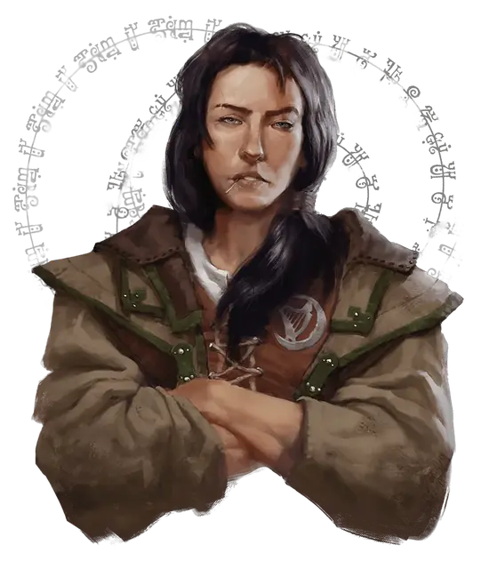

Даратра Шендрел
Darathra Shendrel
Средний Гуманоид (Человек иллюсканец), законно-добрый, именной НИП

Класс Доспеха 14 (кираса)
Хиты 18 (4к8)
Скорость 30 футов
| мод | спас | ||
|---|---|---|---|
| СИЛ | 16 | +3 | +3 |
| ЛОВ | 11 | +0 | +0 |
| ТЕЛ | 14 | +2 | +2 |
| мод | спас | ||
|---|---|---|---|
| ИНТ | 11 | +0 | +0 |
| МДР | 11 | +0 | +0 |
| ХАР | 15 | +2 | +2 |
Навыки Запугивание +4, История +2, Расследование +4, Убеждение +4
Чувства пассивное Восприятие 12
Языки Общий
Опасность 0
Бонус мастерства +2
Особенности
Храбрый. Даратра совершает с преимуществом спасброски от испуга.
Информация для отыгрыша. Будучи Лордом Протектором Трибара и тайным агентом Арфистов, Даратра дала клятву защищать город. Она очень серьезно относится к своим обязанностям. Вдобавок к своему снаряжению, У Даратры есть боевой конь без доспехов по имени Бастер.
Идеал. : «У хороших людей должна быть возможность процветать и быть свободными от тирании».
Привязанность. : «Я отдам свою жизнь, чтобы защитить Трибор и его жителей».
Слабость. : «Я никогда не отступаю. Надави на меня, и я надавлю в ответ».
Действия
Мультиатака. Даратра совершает две рукопашных атаки.
Двуручный меч. . Рукопашная атака оружием: +5 к попаданию, досягаемость 5 фт., одна цель. Попадание: рубящий урон 10 (2к6+3).
Тяжёлый арбалет. . Дальнобойная атака оружием: +2 к попаданию, дистанция 100/400 фт., одна цель. Попадание: колющий урон 5 (1к10). Даратра носит с собой 10 болтов для арбалета.